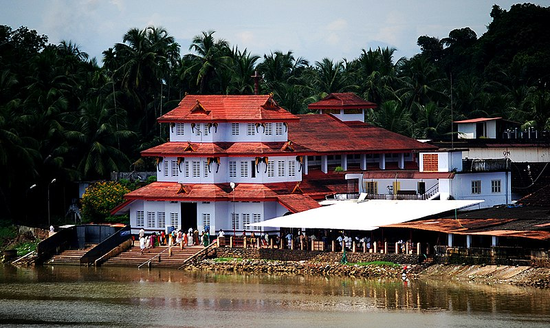

Kannur
land of theyyam and thira
Payyambalam Beach
a refreshing site

St Angelo Fort
enjoys a panoramic and unobstructed view
land of theyyam and thira
a refreshing site
enjoys a panoramic and unobstructed view
Located on the Malabar Coast of Kerala, Kannur (fondly known as Cannanore), is a beautiful city bundled with a plethora of sightseeing options like beaches, monuments, ancient temples and picnic spots.
Steeped in the distinctive local art forms like Theyyam, Kannur still has an aura of the bygone colonial era. The deep footprints of the Dutch, the Portuguese, the British and the Mysore Sultanate are still imbibed into the town and can be witnessed all around. The town is blessed with exceptional art of weaving that has earned it the title of the land of loons and huge cashew trees perhaps rooted by Portuguese
The Moppila Bay Harbor and Arakkal Mosque are near the fort. The fort is now well-maintained under the supervision of the Archaeological Survey of India. Tourists are allowed entry to the fort every day of the week between 8 AM to 6 PM.
Madayipara is one of them. It is a hillock located 60 minutes from Kannur known for its 500 plant species, 300 flowering plants and exotic butterflies. It is due to the biodiversity and its friendly locals, several tourists have found interest in exploring this region.